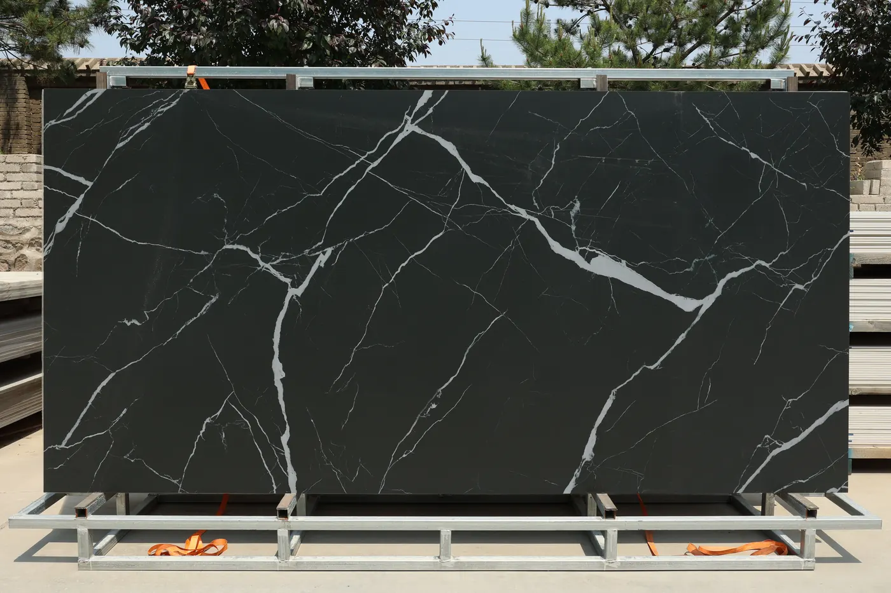

Para marmorarias
Chapa inteira com pronta entrega, preço de distribuidor e um parceiro que não compete com você pelo cliente final. Menos obra parada esperando fornecedor de fora.
Quero ser marmoraria parceiraDistribuidora de lâminas sinterizadas para marmorarias em Praia Grande, SP
Chapa inteira de primeira linha, com importação direta e preço de distribuidor. A Petra Sinter fornece a chapa; o corte e a instalação ficam com a sua marmoraria.
Ao fundo: lâmina Ouro Negro 8025

A Petra Sinter vende exclusivamente lâminas sinterizadas e ultracompactos em chapa inteira. Não cortamos, não instalamos e não vendemos pedaço. Isso significa que não disputamos o seu cliente: a obra continua sendo da sua marmoraria.
Toque em um padrão para ver a lâmina aplicada no ambiente. Para disponibilidade de lote e condição de compra, consulte o comercial pelo WhatsApp.
Pétala Branca 8001
Consultar estoqueDuna Cristalina 8012
Consultar estoqueGelo Negro 8032
Consultar estoqueCalacatta Gold 8008
Consultar estoqueOuro Branco 8011
Consultar estoqueOutono Nobre 8009
Consultar estoqueRocha Imperial 8006
Consultar estoqueMontanha Nevada 8048
Consultar estoqueCinzento Elegance 8040
Consultar estoqueAurora Glacial 8034
Consultar estoqueSopro de Luz 8014
Consultar estoqueVulcão Gélido 8035
Consultar estoqueVittorio Crema 8002
Consultar estoqueCalacatta Branco 8062
Consultar estoqueCinza Nobre 8020
Consultar estoqueGrafite Puro
Consultar estoqueZênite Noturno 8026
Consultar estoqueVeios da Noite 8022
Consultar estoqueNeblina Noturna 8027
Consultar estoqueCanyon Negro 8023
Consultar estoqueCarbono Fosco 8024
Consultar estoqueAtlântida Esmeralda 8037
Consultar estoqueTravertino Toscano 8017
Consultar estoquePúrpura Imperial 8033
Consultar estoqueCinza Atenas 8047
Consultar estoqueMarfim Urbano 8015
Consultar estoqueOuro Negro 8025
Consultar estoquePreto Elegance 8021
Consultar estoqueTaj Mahal 8045
Consultar estoqueCarvalho Real 8031
Consultar estoqueTerracota 8065
Consultar estoqueUm fluxo pensado para a rotina da marmoraria: escolher rápido, receber rápido e produzir sem obra parada.
Pelo catálogo em PDF ou ao vivo no showroom, com a lâmina em grande formato.
O comercial informa disponibilidade de lote e valor da chapa pelo WhatsApp.
Entrega em até 1 dia útil na Baixada Santista e Litoral, com logística regional.
Corte, beneficiamento e instalação ficam com você, com 10 anos de garantia de fábrica no material.
Minerais puros compactados sob altíssima pressão e temperatura. O resultado é uma superfície com a estética da pedra nobre e um desempenho que mármore e granito não alcançam.
Acabamento disponível varia por padrão. Confirme com o comercial na hora da especificação.
Um espaço pensado para arquitetos, designers, marmoristas, construtores e os seus clientes. Aqui a escolha é visual e tátil: as lâminas aparecem em grande formato, do jeito que vão ficar na obra.
Traga o seu cliente para fechar a especificação com a chapa na frente dele.
Segunda a sexta, das 8h às 17h. Sábado, das 8h às 12h.
Agendar visita ao showroomChapa inteira com pronta entrega, preço de distribuidor e um parceiro que não compete com você pelo cliente final. Menos obra parada esperando fornecedor de fora.
Quero ser marmoraria parceiraVariedade de cores, veios e acabamentos alinhada às tendências internacionais, garantia de 10 anos para especificar com segurança e um showroom para levar o cliente.
Solicitar catálogo para especificaçãoAbastecimento regional ágil para cronogramas apertados, com o material entregue em até 1 dia útil na Baixada Santista e Litoral.
Falar sobre a minha obraA Petra Sinter garante as suas superfícies contra defeitos de fabricação por 10 anos, contados a partir da emissão da Nota Fiscal de compra. É segurança para o arquiteto especificar e para a marmoraria indicar ao cliente final.
As condições completas constam no certificado de garantia entregue na compra.
Em novembro a Petra Sinter prepara condições especiais de lote para marmorarias. Entre na lista de prioridade e seja avisado primeiro.
Preencha em menos de um minuto. A equipe comercial responde pelo WhatsApp com estoque, lote e valor da chapa.
Não. A Petra Sinter é uma distribuidora focada 100% no fornecimento de chapas inteiras de grande formato de lâminas sinterizadas. O corte, o beneficiamento e a instalação são feitos pelas marmorarias parceiras.
A lâmina sinterizada, também chamada de ultracompacto, passa por um processo de altíssima pressão e temperatura que compacta minerais puros. O resultado é um material com absorção de água nula e alta resistência a riscos, manchas, altas temperaturas e raios UV, sem perder a beleza e o acabamento nobre do mármore e do granito.
Na Baixada Santista e no Litoral a entrega é feita em até 1 dia útil, com frete e logística regional. Para outras regiões, consulte o comercial pelo WhatsApp.
A garantia cobre defeitos de fabricação por 10 anos a partir da emissão da Nota Fiscal de compra, para o adquirente direto. Defeitos aparentes de superfície devem ser comunicados em até 90 dias da Nota Fiscal e antes de qualquer corte ou instalação. As condições completas estão no certificado entregue na compra.
O portfólio tem acabamentos polido, fosco, acetinado suave e rústico. A disponibilidade de cada acabamento varia conforme o padrão, então confirme com o comercial na especificação.
A venda é de chapa inteira, voltada a marmorarias, construtoras e profissionais de projeto. O cliente final pode conhecer as lâminas no showroom junto com o seu arquiteto ou marmorista.
É só pedir pelo WhatsApp comercial. O catálogo da Coleção Classic é enviado direto, sem formulário longo.
Segunda a sexta, das 8h às 17h, e sábado, das 8h às 12h.